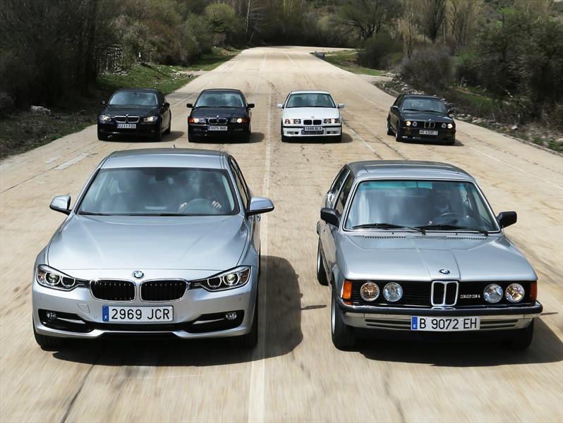

BMW Serie 3 (Berlina)
Desde la serie 3 E21 se vislumbraba la deportividad de lo que es hoy BMW siendo el único fabricante que realiza todos sus coches con tracción trasera, siendo estos cada vez más seguros y rápidos.
Desde la serie 3 E21 se vislumbraba la deportividad de lo que es hoy BMW siendo el único fabricante que realiza todos sus coches con tracción trasera, siendo estos cada vez más seguros y rápidos.
La primera y la segunda generación marcaron una época. Ahora es la serie de coches compactos mas icónica del mundo.
Es un automóvil de turismo del segmento E producido por el fabricante alemán Mercedes-Benz.
Este coche desde que salió al mercado fue considerado como una obra maestra, era y es un coche pensado en el comfort y la suavidad al manejarlo.
Considerado el coche más perfeccionado a lo largo de los años.
Siendo Porsche uno de los dos fabricantes del mundo de motores bóxer, y siendo el único que los ubica en la parte trasera, los 911 adquieren una movilidad y velocidad impresionante, todo esto sin despegarse de la carretera.
La fabricación del F40 comenzó en 1987 con el motivo del 40 aniversario de la fundación de la marca.
Fue considerado como el mejor coche del mundo por muchos años.
Es un automóvil deportivo producido por la empresa italiana Lamborghini entre 1966 y 1972.
Este Lamborghini era alimentado por un motor V12 con 350CV de fuerza, a día de hoy un ejemplar así no baja de los 3 millones de euros.
Era un automóvil superdeportivo de producción inglesa que con la ayuda de BMW llegó a ser el coche más rápido del mundo, este coche llegaba a superar los 390km/h.
Desde 1992 hasta el 2009 cuando el grupo Volkswagen creó el Bugatti Veyron que superaba los 400km/h facilmente pudiendo llegar hasta los 420km/h sin problema.